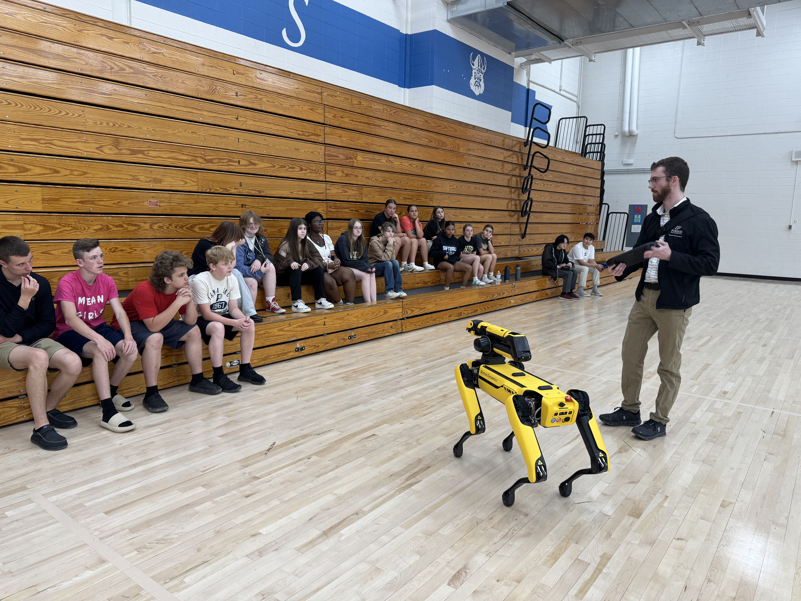
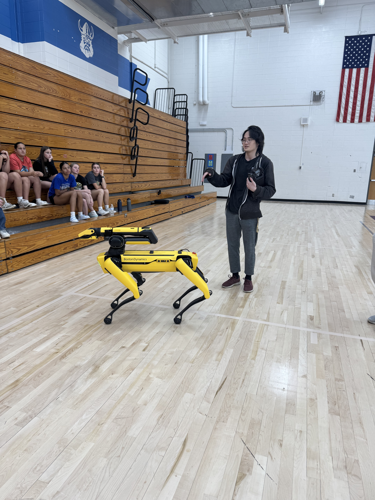
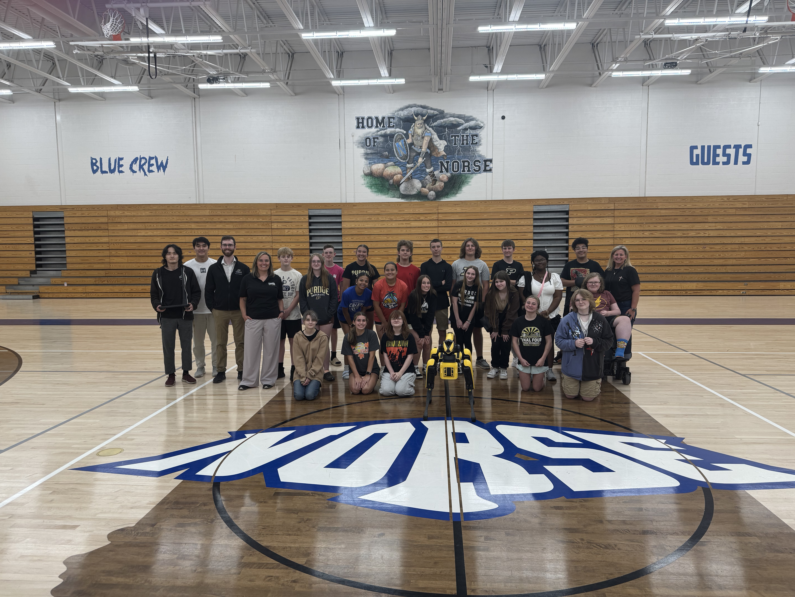

My name is Andrew Liu. I study computer science and mathematics at Purdue, and I am a TA for CS 252 Systems Programming. I also work as an undergraduate research assistant for Prof. Zak Kingston in the CoMMA Lab. Feel free to take a look around, and welcome to Wiggler World.
My academic interests primarily lie in robotics and motion planning, as well as in AI and ML. I would like to pursue graduate school in a related field. I additionally enjoy game dev in my free time.
In summer 2025, I assisted Prof. Kingston with an outreach event at a high school in Wabash, Indiana. There, we talked about many topics and ideas in the field of robotics and CS to inspire students to pursue the field. We also took the dog out for a walk.


